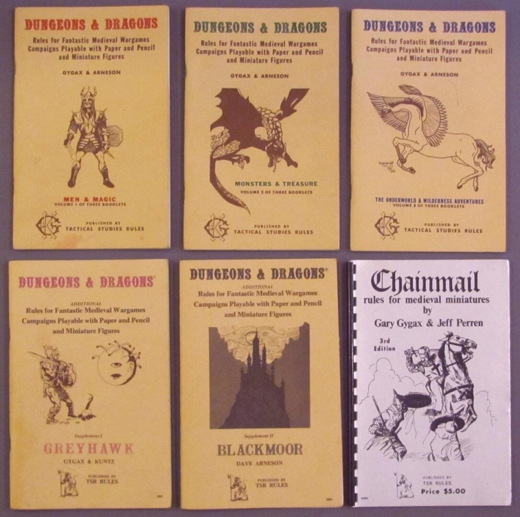

Настольный варгейм Chainmail, разработанный Гэри Гайгэксом в 1971-м — непосредственный предшественник D&D. Игры с миниатюрами пользовались популярностью в США ещё с середины XX века, но обычно правила сосредотачивались на античности, Наполеоновской эпохе или одной из мировых войн. Другие периоды, в частности, Средневековье, многим казались неиграбельными. Гайгэкс хотел развеять этот стереотип и потому специально написал правила для сражений во времена рыцарей.
Гайгэкс, будучи обстоятельным человеком, составил подробную схему того, что игрок должен выкинуть на кубике, чтобы воин с определённым оружием нанёс успешную атаку по врагу в определённых доспехах. Эта базовая схема из соотношения атаки, защиты и кубика сохранилась в D&D до сегодняшнего дня, хотя со временем снаряжение заменили навыки. Кроме того, система рытья подкопов, где игрок передавал ведущему скрытую карту тоннеля, постепенно дорисовывая новые сегменты, легла в основу исследования подземелий.
Следующий шаг сделал молодой геймдизайнер Дэйв Арнесон: он написал для друзей игру Blackmoor, работавшую по модифицированным правилам Chainmail. Это была история поселения в фэнтезийном мире, где группа героев со своими соратниками и помощниками сражалась с монстрами и ходила в походы. В принципе, варгеймы с ролевыми элементами, где геймплей вращается вокруг одного города, существовали и ранее, но Арнесон внёс в концепцию ряд важных нововведений.
Прежде всего, он окончательно закрепил за каждым игроком его «альтер-эго» в игровом мире. Хотя игроки командовали целым войском, у каждого из них был собственный главный герой. Чтобы сделать их уникальными, Арнесон дал им характеристики вроде силы, ловкости, красоты и интеллекта. Тратя золото на свои увлечения, герои получали очки опыта и росли в уровне, прокачивая характеристики или, в случае магов и жрецов, получая новые заклятья.
Кроме того, Арнесон популяризовал подземелья. Под Блэкмуром располагалась гигантская сеть тоннелей, населённая чудовищами, которые стерегут несметные богатства, — герои отправлялись туда на поиски приключений. Подземелья задумывались лишь как одна из многих систем, но исследование тоннелей с постепенным открытием карты покорило сердца игроков благодаря геймплейной петле. Персонажи сражались с монстрами, уносили сокровища домой, прокачивались и вновь отправлялись в путь — эта цепочка событий очень увлекала. Как-то раз местные антагонисты, слуги злого Яйца Кут (Egg of Coot), даже захватили Блэкмур, пока его защитники отвлеклись на очередную подземную экспедицию.
В 1972-м Гайгэкс поиграл в Blackmoor и предложил Арнесону совместно довести его правки к Chainmail до ума. А уже через два года свет увидели книги по Dungeons & Dragons, быстро завоевавшие популярность как среди любителей настольных варгеймов, так и среди поклонников фэнтези. Первые даже начали придумывать своих монстров, классы, магические предметы и заклинания, а также развивать механику игры за волшебные расы.
Многие из их предложений компания Гайгэкса, TSR, позднее включила в Advanced Dungeons & Dragons — подробную книгу правил, изданную в 1977 году. По сути, она стала первой полноценной редакцией D&D. И в скором времени её дополнили ещё двумя книгами: Monster Manual, где авторы собрали параметры чудовищ, и Dungeons Master’s Guide, где были советы для мастера и правила ведения игры. С тех пор большинство редакций D&D основывалось именно на переизданиях этой «большой тройки».